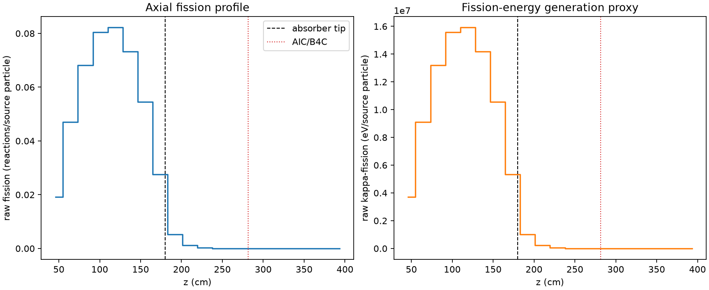
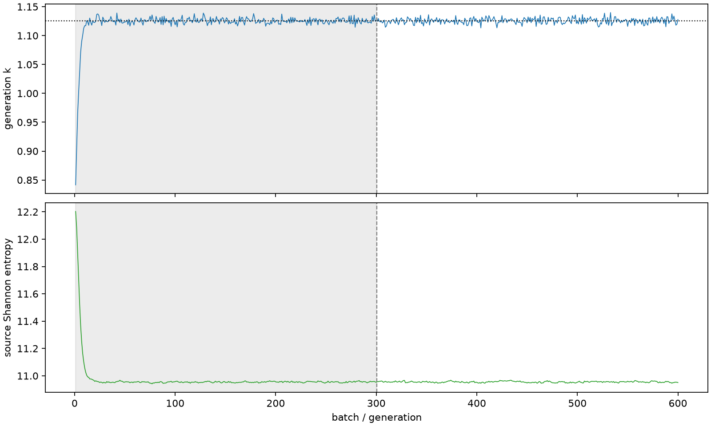

| field | value |
|---|---|
| experiment | V2-STAGE_256_OGRENCI_02-0004 |
| k | 1.1257059443354012 |
| MC standard error | 0.0001898450314915446 |
| seconds | 1044.6930071990064 |
| acceptance | not_assessed |
| convergence | review_required |
Completed is output integrity only; physical and statistical review required. Zero tallies do not prove zero production or zero uncertainty.
| diagnostic | value |
|---|---|
| geometric fuel voxels | 5280 |
| zero fission tally voxels | 1267 |
| low signal fuel voxels | 2150 |
| low signal fission share | 5.9079167217418224e-05 |
| low signal kappa share | 5.911353096499052e-05 |
| important fission share | 0.9500230851346834 |
| previous filter included | 3130 |
| duration estimate s | 1562.5173488400023 |
| actual minus estimate s | -517.824341640996 |
| fission relative MC error | statistics |
|---|---|
| all_geometric_fuel | {"voxels": 5280, "positive_mean_voxels": 4013, "zero_mean_voxels": 1267, "undefined_relative_error_voxels": 1267, "median": 0.010701980855711805, "p95": 0.9209333185502561, "maximum": 1.0000000000000002} |
| low_signal | {"voxels": 2150, "positive_mean_voxels": 883, "zero_mean_voxels": 1267, "undefined_relative_error_voxels": 1267, "median": 0.5551831632412857, "p95": 1.0, "maximum": 1.0000000000000002} |
| important_95pct | {"voxels": 1888, "positive_mean_voxels": 1888, "zero_mean_voxels": 0, "undefined_relative_error_voxels": 0, "median": 0.0058660323861175374, "p95": 0.009197597367424681, "maximum": 0.010962221968737975} |
| outside_previous_filter | {"voxels": 2150, "positive_mean_voxels": 883, "zero_mean_voxels": 1267, "undefined_relative_error_voxels": 1267, "median": 0.5551831632412857, "p95": 1.0, "maximum": 1.0000000000000002} |
| kappa_fission relative MC error | statistics |
|---|---|
| all_geometric_fuel | {"voxels": 5280, "positive_mean_voxels": 4013, "zero_mean_voxels": 1267, "undefined_relative_error_voxels": 1267, "median": 0.01068958658857052, "p95": 0.9207757380370655, "maximum": 1.0000000000000002} |
| low_signal | {"voxels": 2150, "positive_mean_voxels": 883, "zero_mean_voxels": 1267, "undefined_relative_error_voxels": 1267, "median": 0.5533631954567234, "p95": 1.0, "maximum": 1.0000000000000002} |
| important_95pct | {"voxels": 1888, "positive_mean_voxels": 1888, "zero_mean_voxels": 0, "undefined_relative_error_voxels": 0, "median": 0.0058588677802635615, "p95": 0.009185804025774624, "maximum": 0.010948413878192974} |
| outside_previous_filter | {"voxels": 2150, "positive_mean_voxels": 883, "zero_mean_voxels": 1267, "undefined_relative_error_voxels": 1267, "median": 0.5533631954567234, "p95": 1.0, "maximum": 1.0000000000000002} |
| axial bin | fission share | kappa-fission share |
|---|---|---|
| 1 | 0.04180641088065788 | 0.04180818416690234 |
| 2 | 0.10254767816762878 | 0.10254654865811216 |
| 3 | 0.14851249151926396 | 0.1485106150018614 |
| 4 | 0.1751598097572791 | 0.1751579195689035 |
| 5 | 0.17890516880226306 | 0.17890314790840794 |
| 6 | 0.1594919998073952 | 0.15949021815015946 |
| 7 | 0.11870501076452844 | 0.118703619233919 |
| 8 | 0.060124481168492075 | 0.060126174096851275 |
| 9 | 0.011492249361889697 | 0.011497280969759079 |
| 10 | 0.002512756120451228 | 0.0025139760124351183 |
| 11 | 0.0005732925853947706 | 0.0005735741327285794 |
| 12 | 0.00012793674035619984 | 0.00012800192733768883 |
| 13 | 3.2525119368551506e-05 | 3.254386745590452e-05 |
| 14 | 6.25902109632002e-06 | 6.266236142147847e-06 |
| 15 | 1.6740602034971994e-06 | 1.6739224361798493e-06 |
| 16 | 2.561237311825174e-07 | 2.5614658824061166e-07 |
| 17 | 0.0 | 0.0 |
| 18 | 0.0 | 0.0 |
| 19 | 0.0 | 0.0 |
| 20 | 0.0 | 0.0 |
Histories include the inactive-to-active transition at batch 300. kappa-fission approximates fission energy production, not total heat deposition.

